Soru 1Cevap: C
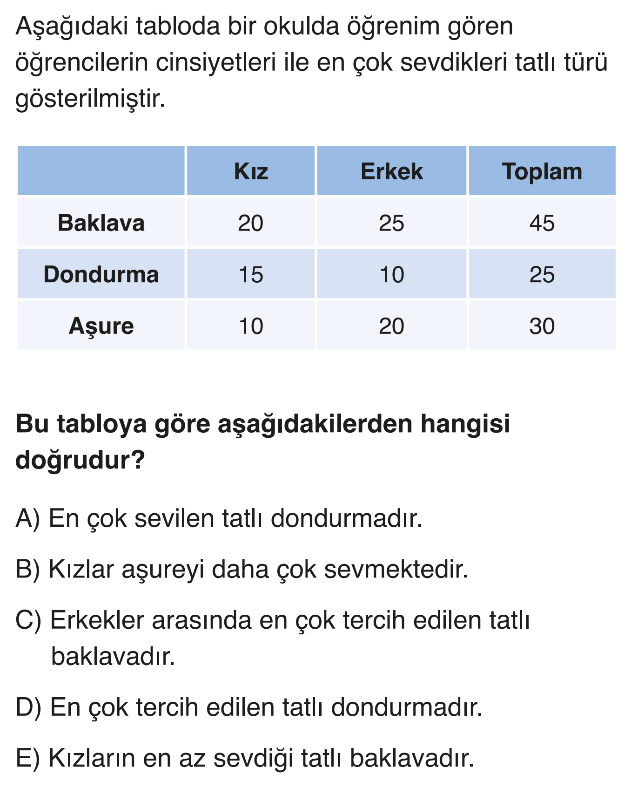
Çözüm
- Toplamlar: baklava 45, dondurma 25, aşure 30 → en çok baklava (A, D yanlış).
- Kızlar: baklava 20, dondurma 15, aşure 10 → aşure en az (B, E yanlış).
- Erkeklerde baklava 25 en yüksektir → C.
Cevap: C
Soru 2Cevap: A
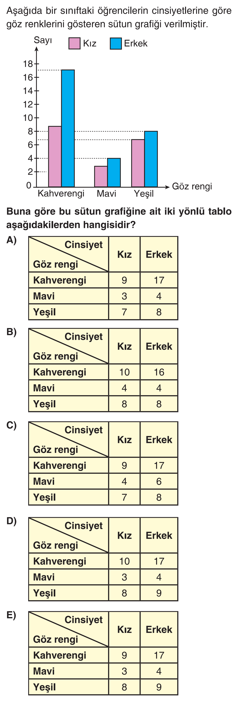
Çözüm
- Grafikten: kahverengi kız 9, erkek 17; mavi kız 3, erkek 4; yeşil kız 7, erkek 8.
- İki yönlü tabloda satırlar göz rengini, sütunlar cinsiyeti gösterir.
- Bu değerleri içeren tablo A'dır.
Cevap: A
Soru 3Cevap: C
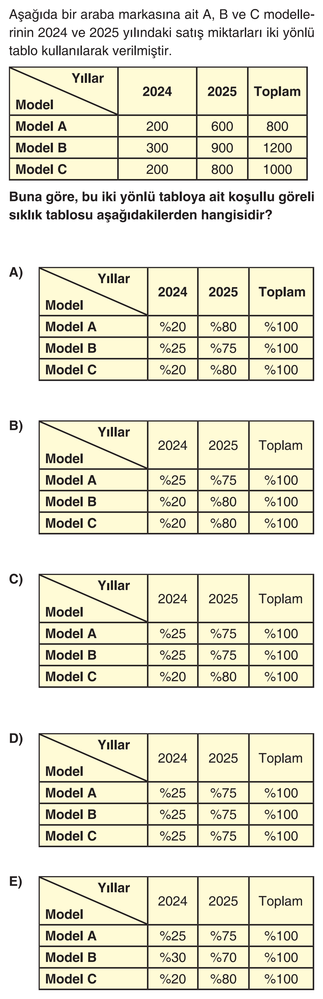
Çözüm
- Her model için yıllara göre oranlar: A 200/800 = %25, 600/800 = %75.
- B 300/1200 = %25, %75; C 200/1000 = %20, %80.
- Bu oranları veren tablo C'dir.
Cevap: C
Soru 4Cevap: D
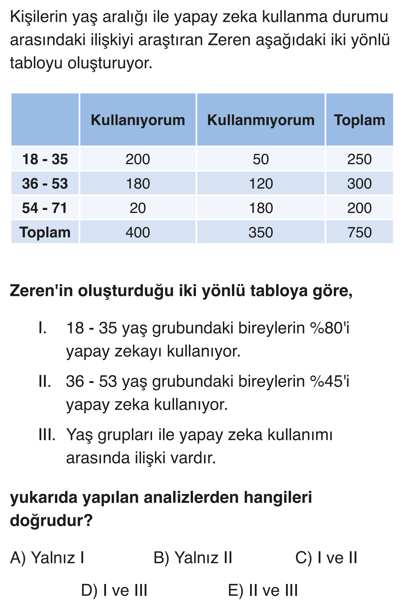
Çözüm
- 18–35: 200/250 = %80 kullanıyor (I doğru).
- 36–53: 180/300 = %60 kullanıyor; %45 değil (II yanlış).
- Yaş arttıkça kullanım oranı %80 → %60 → %10 değişiyor; ilişki vardır (III doğru). Cevap: I ve III.
Cevap: D
Soru 5Cevap: D
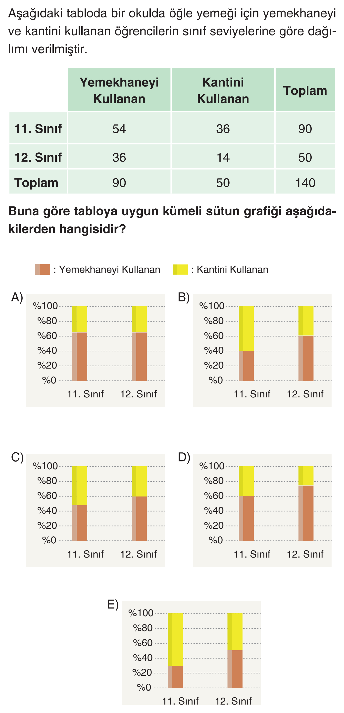
Çözüm
- 11. sınıf: yemekhane 54/90 = %60, kantin %40.
- 12. sınıf: yemekhane 36/50 = %72, kantin %28.
- Yemekhane payı 11. sınıfta %60, 12. sınıfta yaklaşık %72 olan grafik D'dir.
Cevap: D
Soru 6Cevap: B
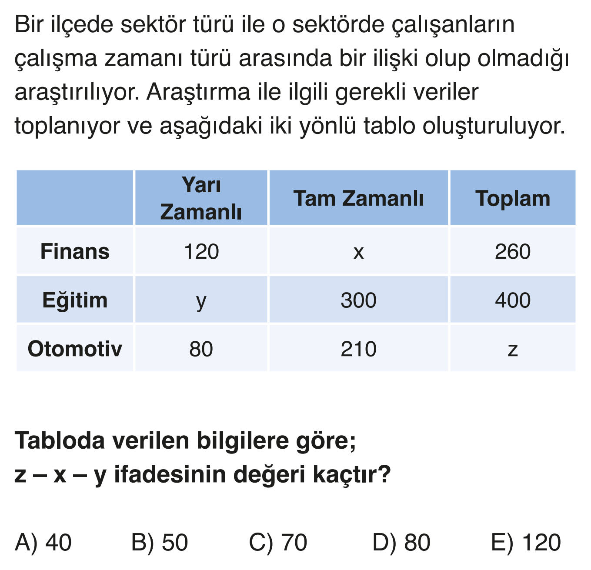
Çözüm
- Finans: 120 + x = 260 → x = 140.
- Eğitim: y + 300 = 400 → y = 100; Otomotiv: z = 80 + 210 = 290.
- z − x − y = 290 − 140 − 100 = 50 → B.
Cevap: B
Soru 7Cevap: B
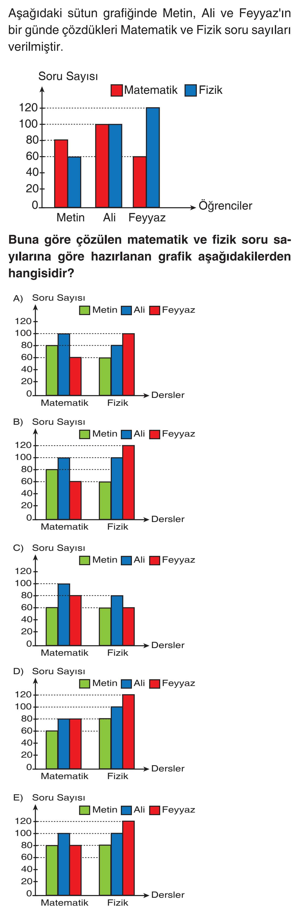
Çözüm
- Grafikten: Matematik — Metin 80, Ali 100, Feyyaz 60; Fizik — Metin 60, Ali 100, Feyyaz 120.
- Yeni grafikte gruplar derslere, renkler öğrencilere göre düzenlenmiştir.
- Bu değerleri gösteren grafik B'dir.
Cevap: B
Soru 8Cevap: C
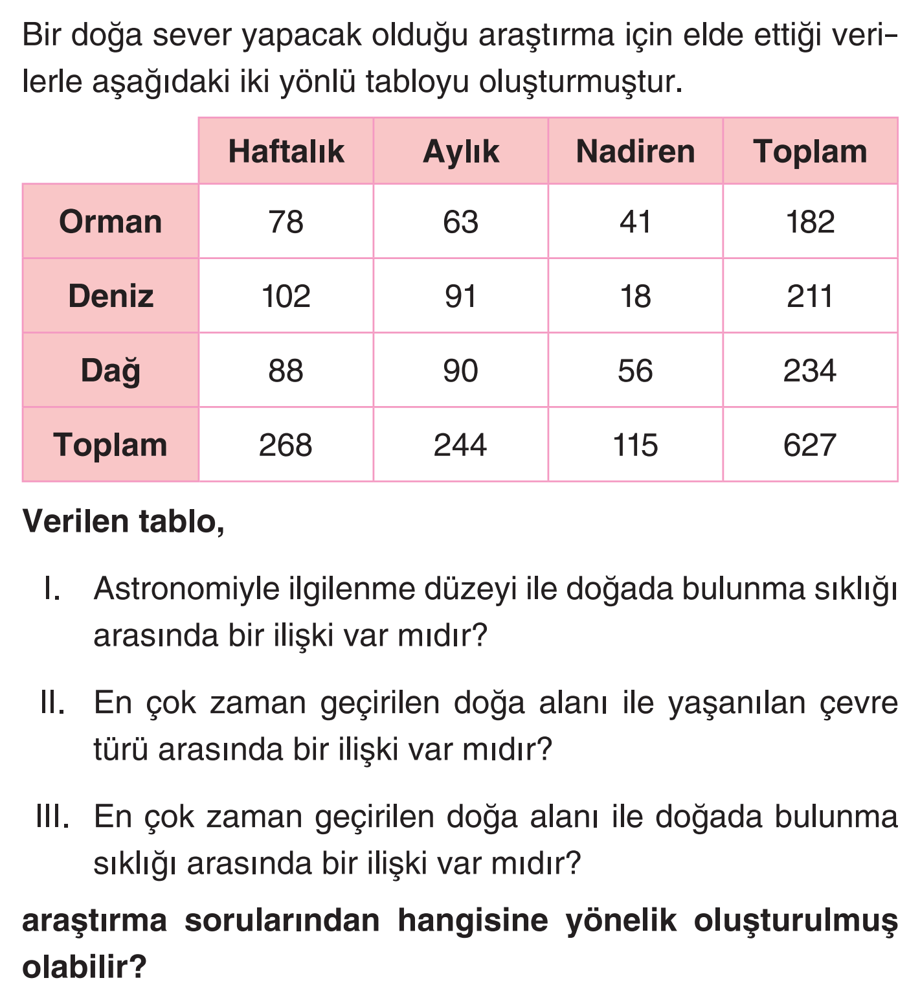
A)Yalnız IB)Yalnız IIC)Yalnız IIID)I ve IIE)II ve III
Çözüm
- Tablonun satırları doğa alanını (orman, deniz, dağ), sütunları doğada bulunma sıklığını gösterir.
- I'deki astronomi ilgisi ve II'deki yaşanılan çevre türü tabloda yoktur.
- Tablo III'teki araştırma sorusuna yöneliktir → Yalnız III.
Cevap: C
Soru 9Cevap: C
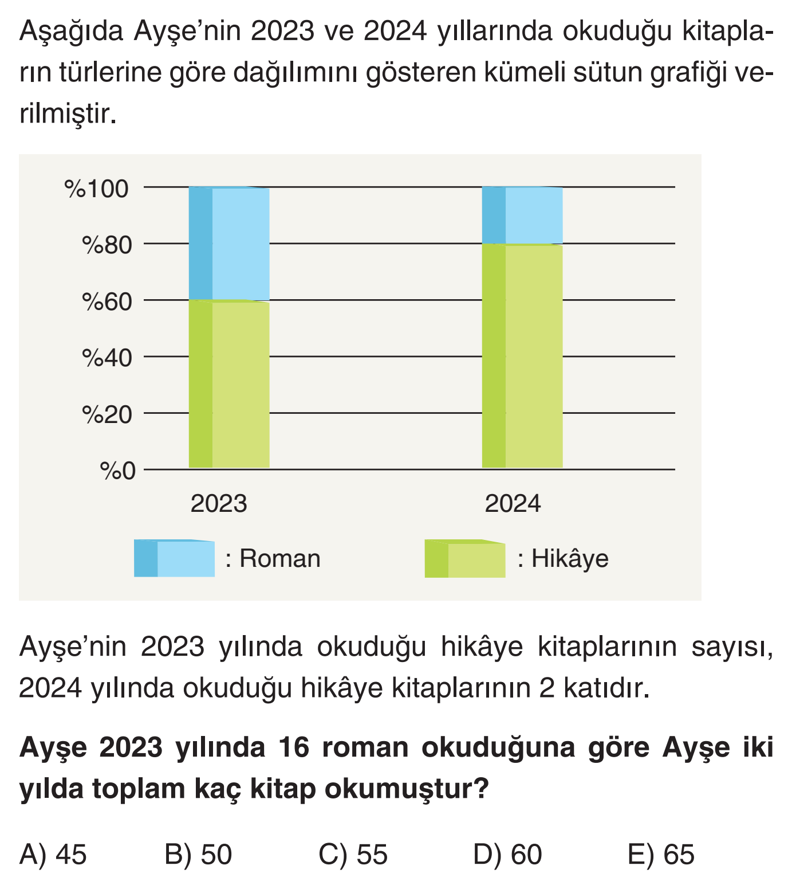
Çözüm
- 2023: roman %40 = 16 → toplam 40, hikâye 24.
- 2024 hikâye sayısı 24/2 = 12 ve bu %80 → 2024 toplamı 15.
- İki yılda toplam 40 + 15 = 55 → C.
Cevap: C
Soru 10Cevap: B
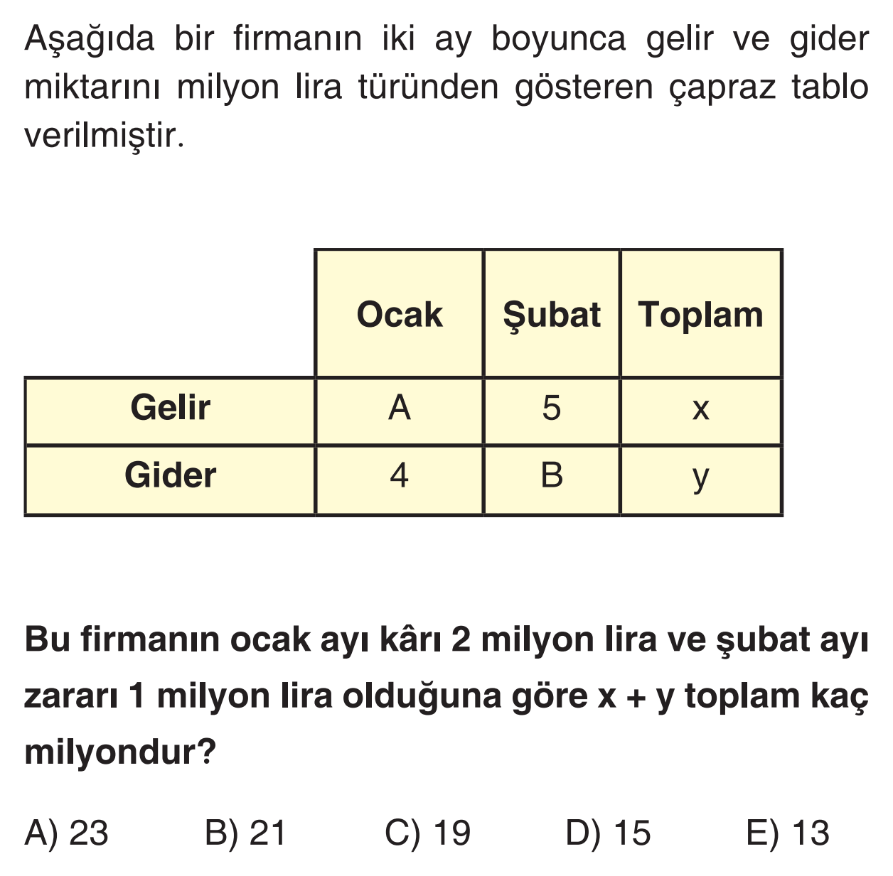
Çözüm
- Ocak kârı: A − 4 = 2 → A = 6. Şubat zararı: B − 5 = 1 → B = 6.
- x = 6 + 5 = 11, y = 4 + 6 = 10.
- x + y = 21 → B.
Cevap: B
Soru 11Cevap: D
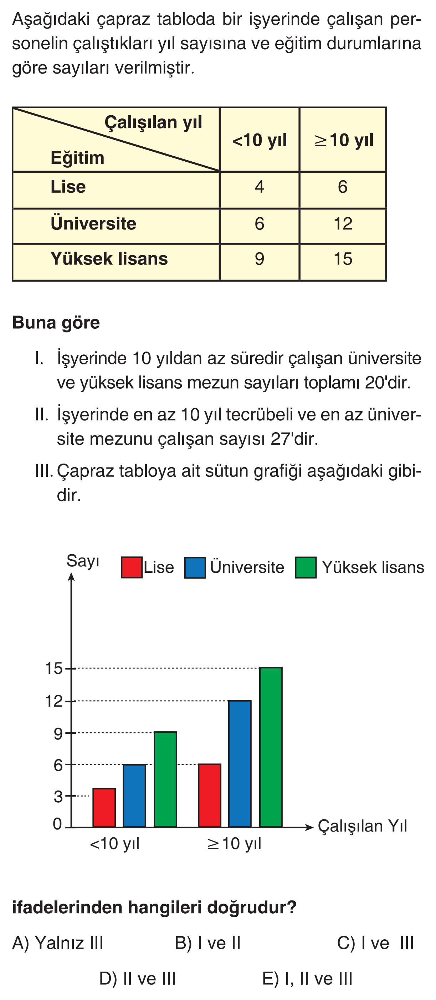
Çözüm
- 10 yıldan az çalışan üniversite + yüksek lisans: 6 + 9 = 15, 20 değil (I yanlış).
- En az 10 yıl ve en az üniversite: 12 + 15 = 27 (II doğru).
- Grafikte <10 yıl: 4, 6, 9; ≥10 yıl: 6, 12, 15 → tabloyla uyumlu (III doğru). Cevap D.
Cevap: D
Soru 12Cevap: D
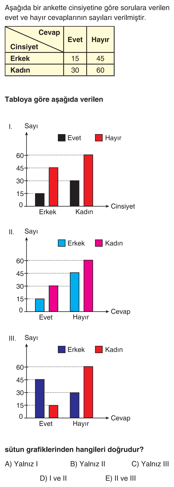
Çözüm
- I. grafik: erkek 15 evet, 45 hayır; kadın 30 evet, 60 hayır → doğru.
- II. grafik: evet 15 erkek, 30 kadın; hayır 45 erkek, 60 kadın → doğru.
- III. grafikte evet diyen erkek 45, kadın 15 gösterilmiş → yanlış. Cevap: I ve II.
Cevap: D
Soru 13Cevap: A
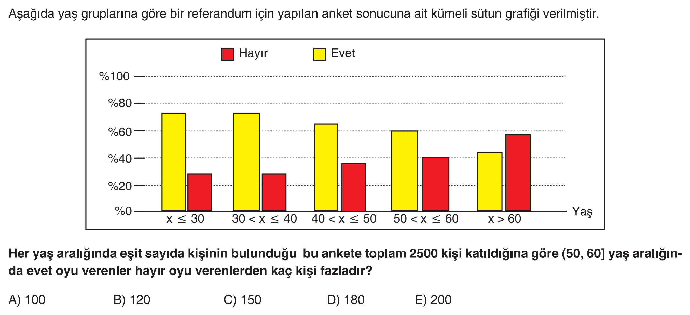
Çözüm
- 5 yaş grubunda eşit sayıda kişi: 2500 ÷ 5 = 500.
- (50, 60] grubunda evet %60 → 300, hayır %40 → 200.
- Fark 300 − 200 = 100 → A.
Cevap: A
Soru 14Cevap: B
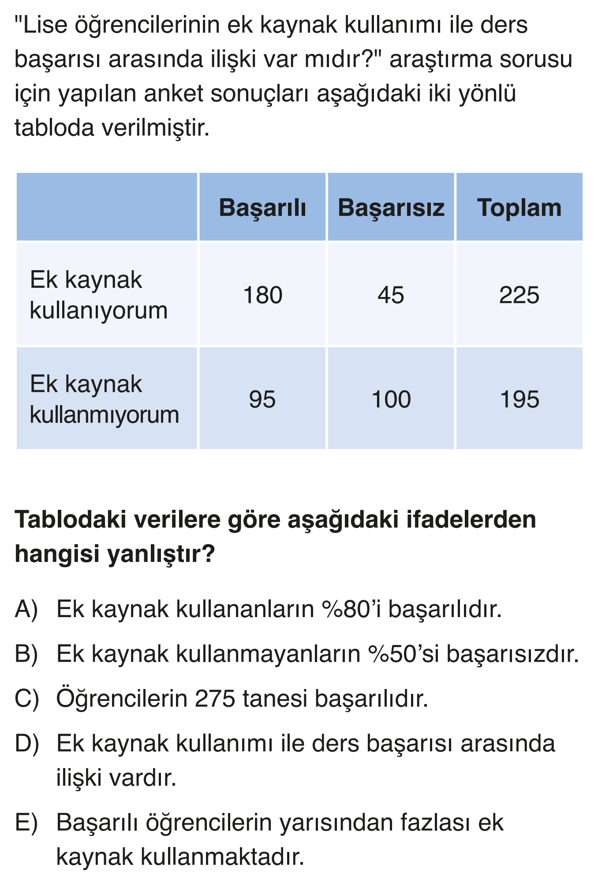
Çözüm
- Ek kaynak kullananlarda başarılı 180/225 = %80 (A doğru); başarılı toplam 180 + 95 = 275 (C doğru).
- Kullanmayanlarda başarısız 100/195 ≈ %51; %50 değildir (B yanlış).
- Oranlar gruplara göre farklı → ilişki var (D); başarılıların 180/275'i ek kaynak kullanıyor (E). Cevap B.
Cevap: B
Soru 15Cevap: C
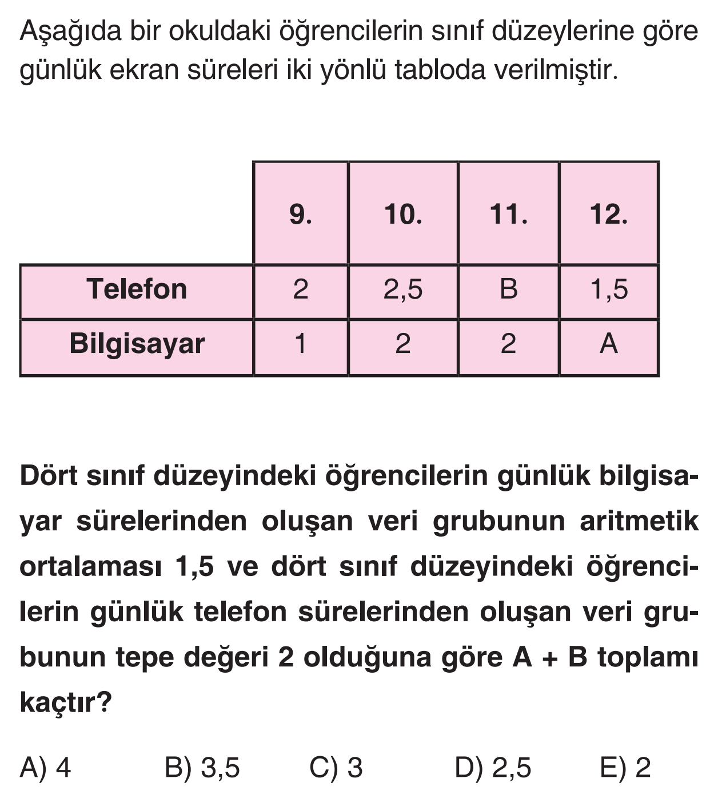
Çözüm
- Bilgisayar sürelerinin ortalaması: (1 + 2 + 2 + A) ÷ 4 = 1,5 → A = 1.
- Telefon süreleri 2; 2,5; B; 1,5 ve tepe değer 2 → B = 2.
- A + B = 3 → C.
Cevap: C
Soru 16Cevap: D
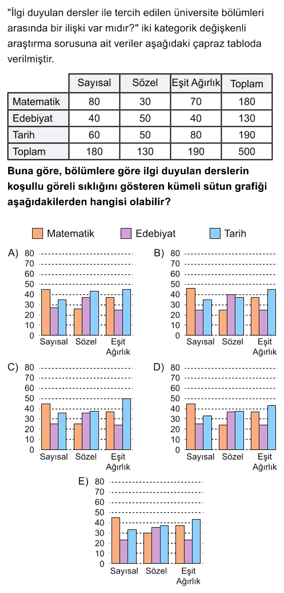
Çözüm
- Bölümlere göre koşullu oranlar: Sayısal M 80/180 ≈ %44, E ≈ %22, T ≈ %33.
- Sözel M 30/130 ≈ %23, E ≈ %38, T ≈ %38; Eşit ağırlık M 70/190 ≈ %37, E ≈ %21, T ≈ %42.
- Bu oranlara uyan grafik D'dir.
Cevap: D
Soru 17Cevap: A
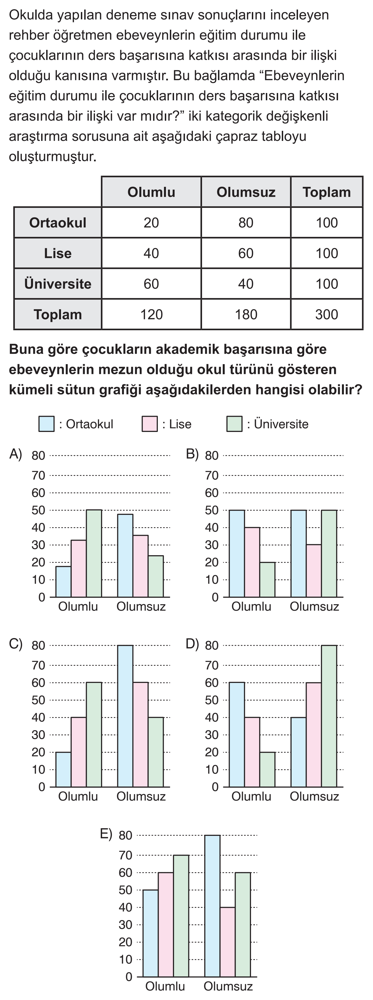
Çözüm
- Başarıya katkıya göre (sütunlara göre) okul türü oranları istenir.
- Olumlu (120): ortaokul 20/120 ≈ %17, lise ≈ %33, üniversite %50. Olumsuz (180): ortaokul ≈ %44, lise ≈ %33, üniversite ≈ %22.
- Bu oranlara uyan grafik A'dır.
Cevap: A
Soru 18Cevap: C
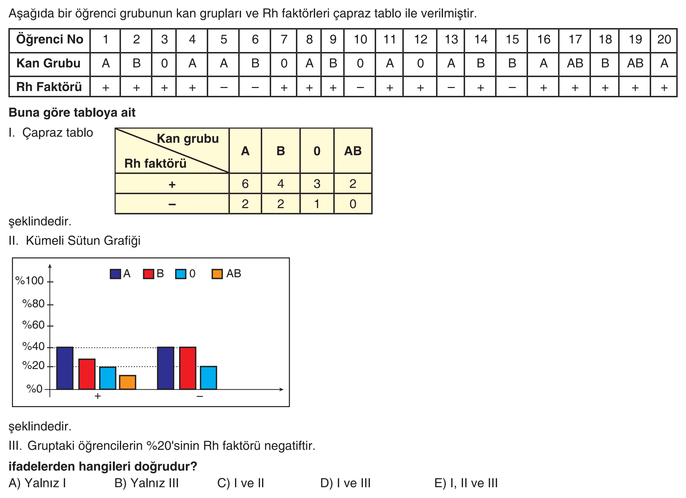
Çözüm
- Listeden sayım: Rh(+) A 6, B 4, 0 3, AB 2; Rh(−) A 2, B 2, 0 1, AB 0 → I doğru.
- Rh(+) 15 kişide oranlar %40, ≈%27, %20, ≈%13; Rh(−) 5 kişide %40, %40, %20 → grafik doğru (II).
- Rh(−) 5/20 = %25 olduğundan III yanlış. Cevap: I ve II.
Cevap: C
Soru 19Cevap: E
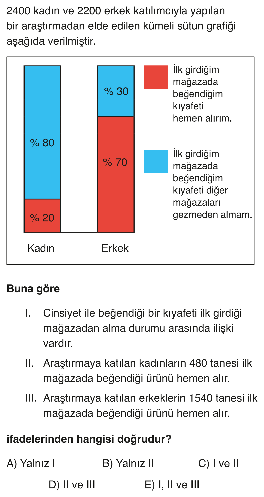
Çözüm
- Kadınlarda hemen alanlar %20, erkeklerde %70; oranlar cinsiyete göre değiştiği için ilişki vardır (I).
- Kadınlar: 2400 · 0,20 = 480 kişi hemen alır (II).
- Erkekler: 2200 · 0,70 = 1540 kişi hemen alır (III). Cevap E.
Cevap: E
Soru 20Cevap: C
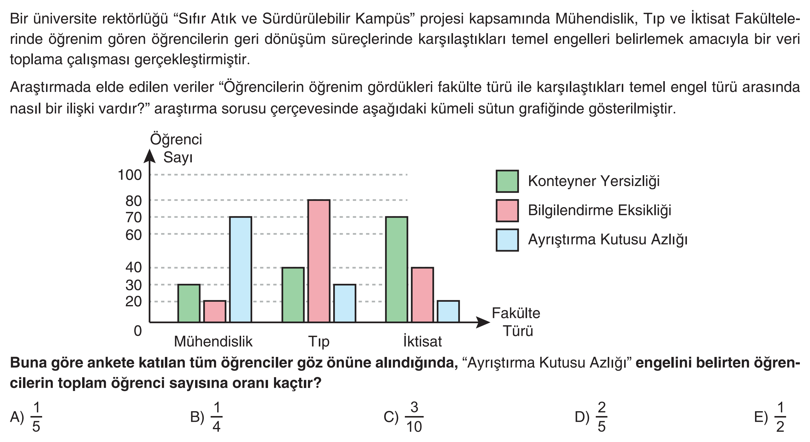
Çözüm
- Fakülte toplamları: mühendislik 30 + 20 + 70 = 120, tıp 40 + 80 + 30 = 150, iktisat 70 + 40 + 20 = 130 → toplam 400.
- Ayrıştırma kutusu azlığı: 70 + 30 + 20 = 120.
- Oran $\frac{120}{400} = \frac{3}{10}$ → C.
Cevap: C